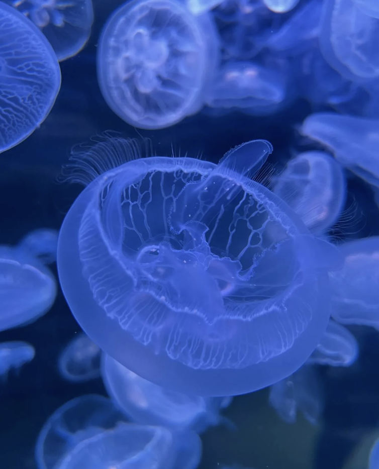
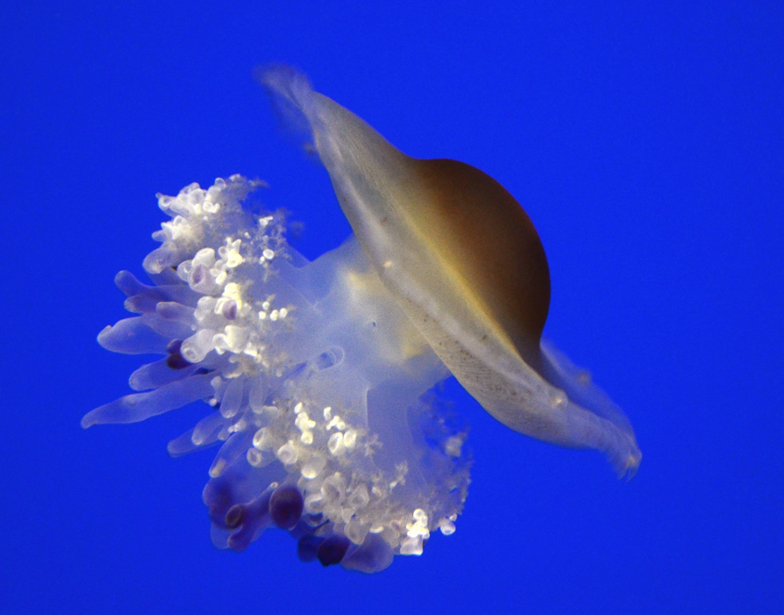
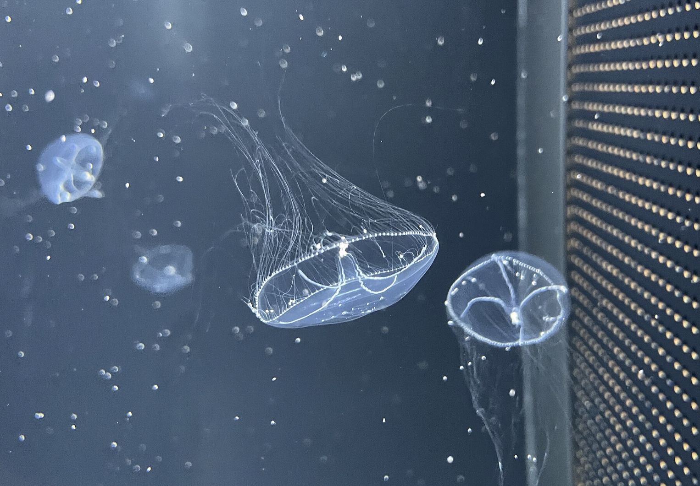

Here are some jellies that you can keep as pets!
Disclaimer: Jellyfish require a lot of care and money

Known for their translucent and four rings in its body. They are called the Moon jellyfish for looking similar to a moon.

For more experienced jellyfish pet owners. They are called the Fried Egg Jellyfish for looknig similar to egg yolk.

Jellyfish generaly recommeneded for beginners. Known for their slow and peaceful movements.
You interested in having a jelly of your own?
Check out Ocean's Clouds to get started today!